セキサイのホームエリア｡迫間峠､富之保､上之保､美濃の町までのお店です｡
大正ロマンの建物で､サイクリストを朝から迎えてくれるカフェ


朝8時30分から営業しているので､朝練やモーニングライドにぴったりです｡コーヒーを頼むとモーニングがついてくるお値打ちなセットや､午後のアフタヌーンティー､夏のふわふわかき氷が人気です｡
建物は大正村のような風情があり､店員さんがとにかくやさしいお店です｡人気店なので､満席で入れないこともあります｡セキサイでは､冬のカフェライドの目的地にもなっています｡
迫間にできた､皮ごと食べる丸ごとBANANAのスムージースタンド
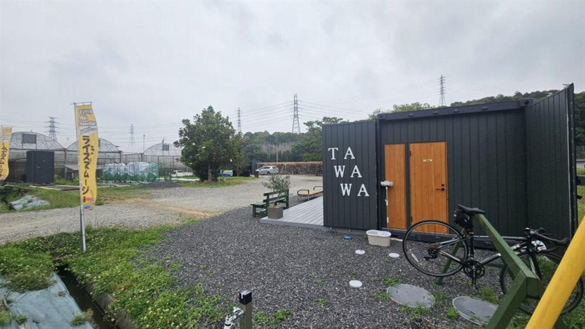
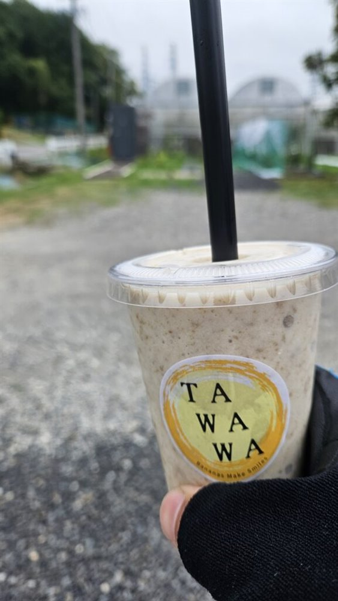
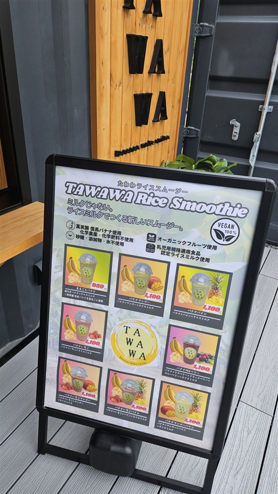
関市迫間にできた､ヴィーガンスムージーのスタンドです｡大きな農園の中にあり､サイクルスタンドも用意されています｡
看板メニューは｢丸ごとBANANA｣｡皮ごと食べられるバナナで食物繊維が豊富､皮のつぶつぶと氷のシャリシャリがとてもおいしいです｡クラフトビールも出しているので､迫間峠を越えるライドの朝や帰りにおすすめです｡
見坂峠を下った先にある､おしゃれなベーカリーカフェ
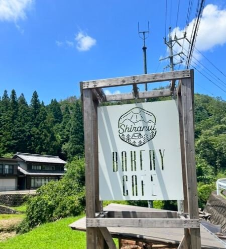
見坂峠を越えて､下之保の集落に入ったところにあるおしゃれなカフェです｡看板には｢BAKERY CAFE｣とあり､パンを買うこともできます｡
中濃山岳サイクリングのコースの途中にあるので､休憩にぴったりです｡
森の中の雰囲気がすばらしい､バイクにも人気のカフェ
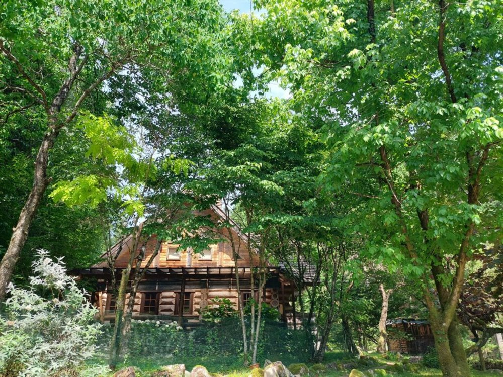
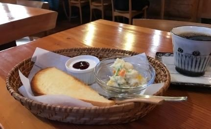
富之保地区にある､森のカフェです｡緑に囲まれたログハウスのような建物で､とても素晴らしい雰囲気です｡
名古屋方面のように､お得なモーニングがあります｡オートバイで来る人にも大人気で､サイクリングでも立ち寄れます｡
迫間峠の頂上で食べる､関市民おなじみのチャーシューメン
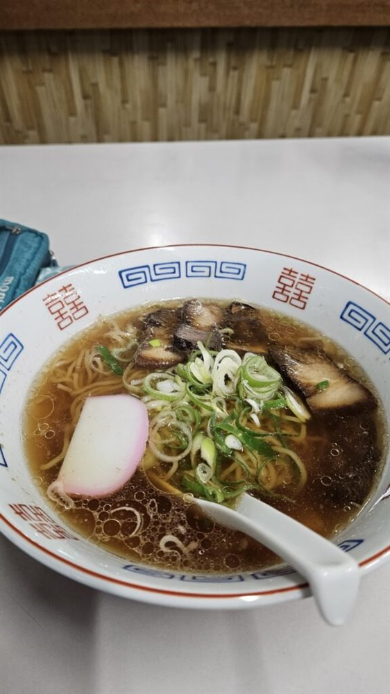
関市迫間の頂上にあるお店です｡迫間不動ヒルクライムコースの目的地で､関のメンバーがいつも食べている､絶品のチャーシューメンが名物です｡
近ごろは値上げもありますが､それでもチャーシューが最高です｡朝のライドのあとに食べるのが､習慣になっています｡
けいちゃん･うなぎ･カツ丼､トマト工業メンバー御用達の食堂
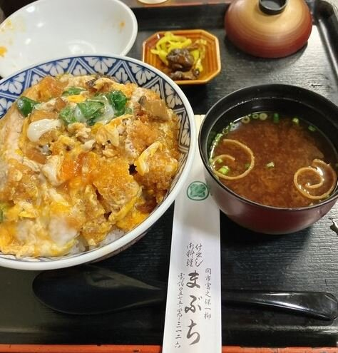
富之保地区にある､トマト工業のメンバー御用達のお店です｡けいちゃん､うなぎ､カツ丼がおいしく､カツ丼は大盛を頼めば大食いの人でも必ず満足できます｡
ケイちゃんは併設のショップでタレだけでも買えるので､遠く名古屋から通う人もいます｡セキイチのおすすめグルメでもあります｡
外はカリッカリ､中はふっくらの炭火うなぎ
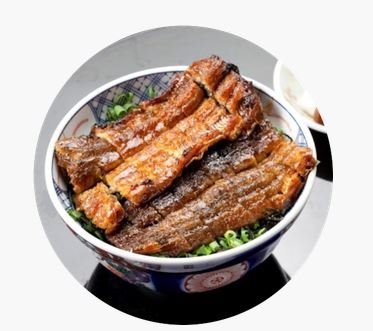
関市上之保の城山の麓にあるうなぎのお店です｡関市のうなぎは炭火で焦がして焼くので､外はカリッカリ､中はふっくらに仕上がります｡
｢ここで食べたら地元でうなぎが食べられなくなった｣という声もあるほどです｡ほほえみの湯で温泉に入ったあとに食べるのが､上之保のおすすめのモデルコースです｡
上之保の名産品､ゆずの商品づくりの会社
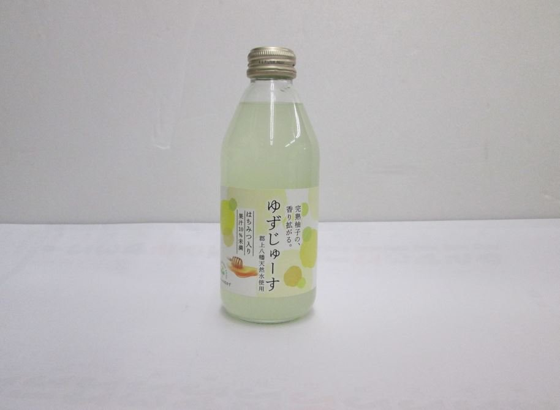
上之保の名産品はゆずです｡ゆずはビタミンCがレモンの約3倍で､風邪予防や疲労回復にも役立ちます｡2021年にはゆずジュースの新作が発売され､トマト工業からも取引先さんへの感謝の気持ちとして配布しました｡
ライドの帰りに道の駅平成で足湯につかりながら､ゆずのお土産を買うのがおすすめです｡
美濃で食べる､食べごたえのあるモナカアイス
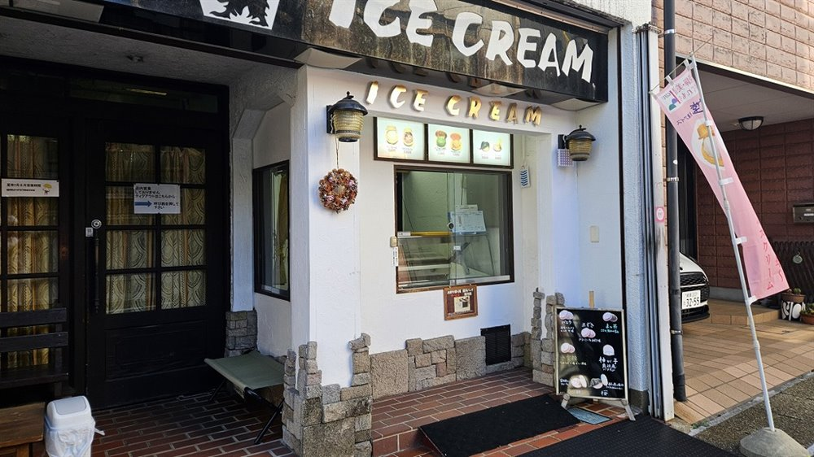
美濃の町にある､アイスの名店です｡名物のモナカアイスはテイクアウトでき､かたいですが､食べごたえがあって本当においしいです｡
石徹白や郡上方面からの帰り道に美濃へ戻ってきたとき､ほっとひと息つくのにぴったりです｡
冠山チャレンジの最初の補給は､片道15km地点のこのお店で
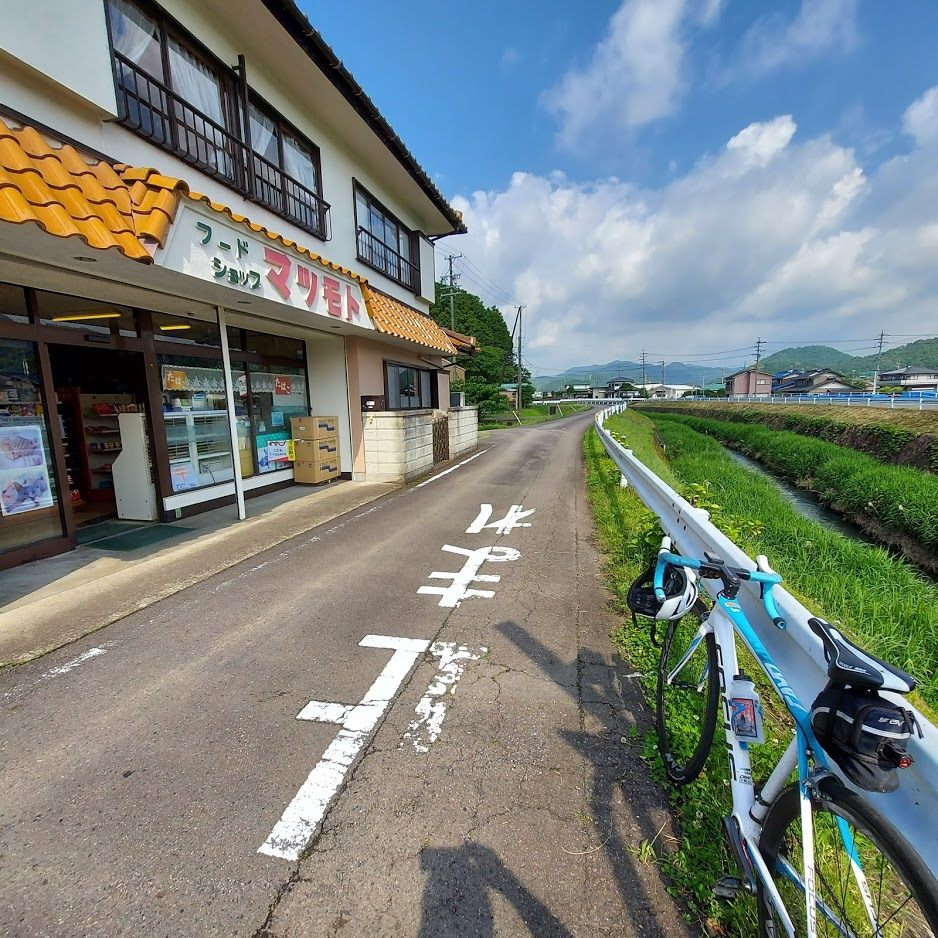
武儀川沿いにある商店です｡冠山へのサイクリングで､家から片道15kmの最初の休憩場所になりました｡細ポッキー､アンパン､ジュースを購入｡
寝坊して出発が遅くなったおかげで､補給店が開いている時間に着けました｡｢どこいくの?｣と聞かれて｢冠山行きます｣と答えると､｢すごいとこやで､頑張ってね!｣と励ましてもらいました｡
洞戸の名産キウイのシャーベットでひと休み
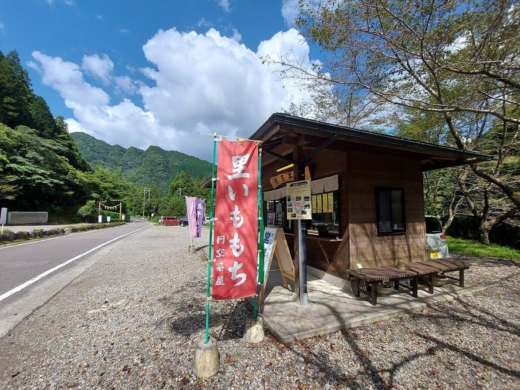
板取温泉へ向かう､板取川沿いのライドで寄り道したお店です｡洞戸はキウイフルーツの特産地で､ここではキウイのシャーベットをいただきました｡
モネの池の先､板取温泉までは13kmほど｡ダイヤモンドのように美しい板取川を眺めながら走る､夏におすすめのコースです｡
関市百年公園南口にある､やさしい店主さんの自転車屋


関市の百年公園南口にあるスポーツバイクのお店です｡セキサイのメンバーも､いつもお世話になっている行きつけのお店です｡
いちばんの特長は､やさしい店主さんです｡ネットで買ったパーツなど､持ち込みのパーツでも取り付けてくれます｡初心者でも相談しやすく､ロードバイクのレンタルもあるので､自転車選びに迷っているときにも心強い味方です｡
年に一度のオーバーホールや､ライド前日の急なトラブルにも対応してもらっています｡
※紹介は､トマト工業ブログ(2016年〜2026年)の記事をもとにしています｡営業時間や定休日は変わることがあるので､お出かけの前にご確認ください｡